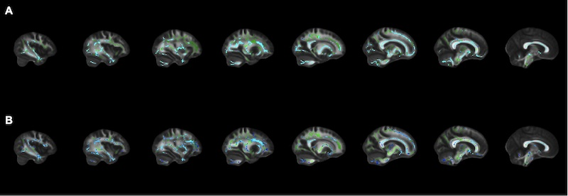
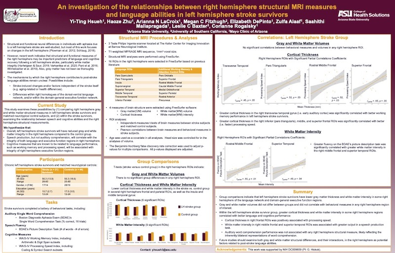
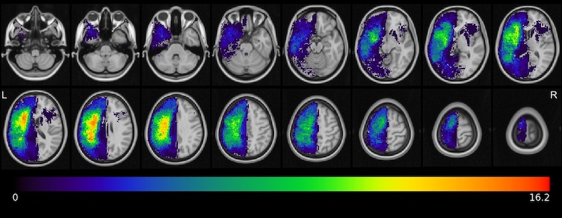
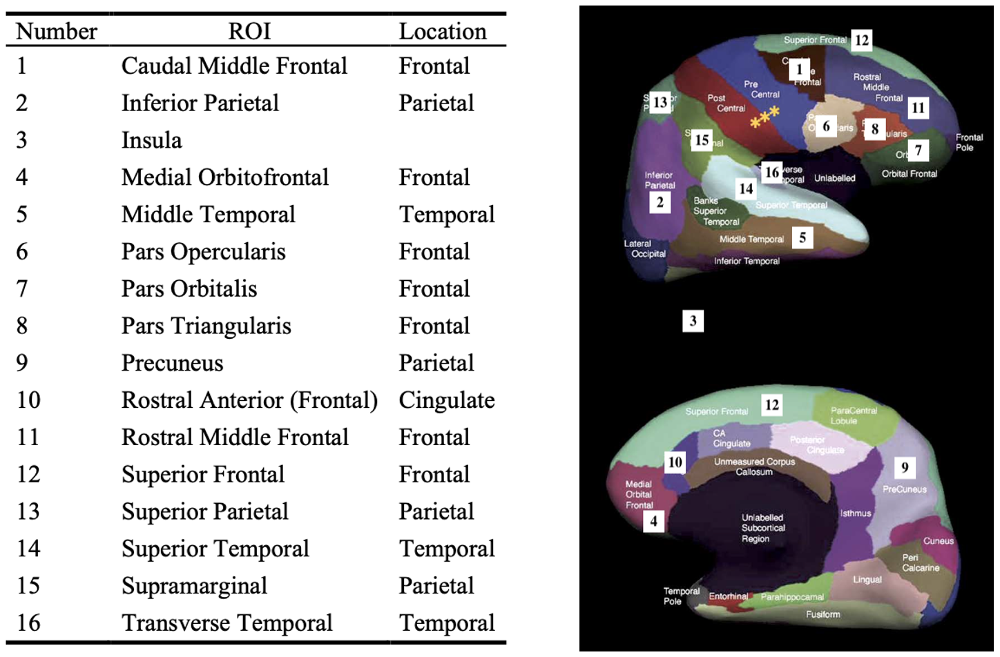
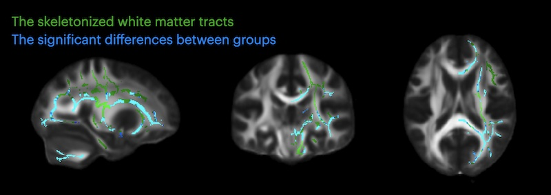
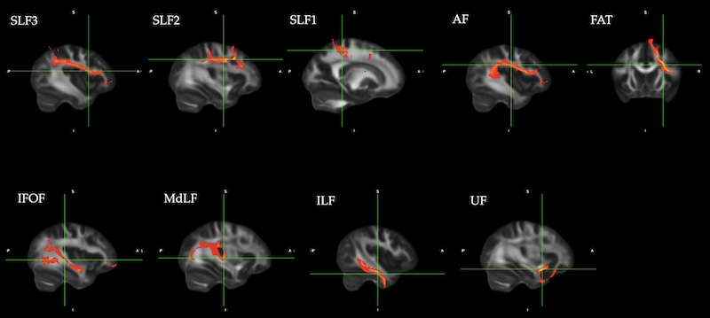
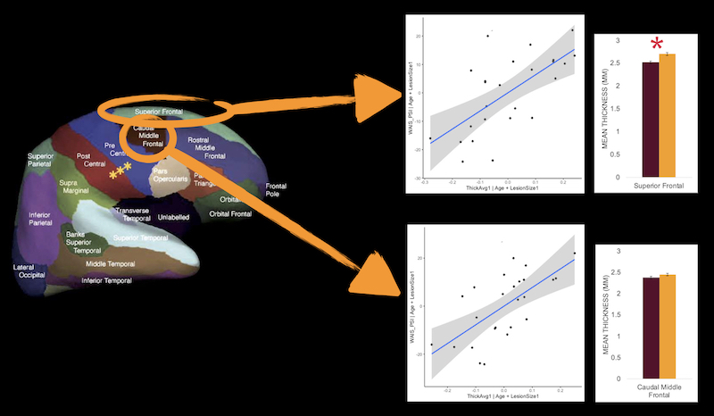

Structural MRI and DTI 影像處理
在這篇碩士論文中，我使用 FreeSurfer 進行結構性磁振造影數據處理，以及使用 FSL 處理擴散張量磁振造影，接著獲取影統計數據後， 用 R 做資料處理、統計分析、及做圖。最終提出對於左腦中風病人術後的右腦在灰質和白質的可能變化。
使用的統計分析跟做圖軟體: R, R Studio
磁振造影數據處理軟體: FreeSurfer, FSL, MRICron
於 12th Annual Meeting of the Society for the Neurobiology of Language 國際研討會上展示的海報報告
研究問題
左腦中風病人的潛在右腦變化
Which, if any, structural or diffusion MRI measures in the right hemisphere differ between chronic left hemisphere stroke survivors and neurotypical control subjects?
Could these right cortical and white matter tract differences reflect compensation for the loss of left hemispheric language functions?
下圖是朋友友情贊助的病灶重疊圖
數據處理: 結構性磁振造影 T1-weighted Images
結構性磁振造影經過 FreeSurfer 分割後的腦區如右側示意圖，我僅分析右半腦中與語言功能相關的 16 個腦區。
測量值為每個腦區的灰質容積、平均厚度、平均曲率，以及白質容積、intensity。
數據處理: 擴散張量磁振造影 Diffusion Tensor Images (DTI)
在前處理過後，跑 voxel-wise exploratory analysis: Tract-Based Spatial Statistics (TBSS)
接著跑每一個病人跟控制組受試者的 ROI-based analysis: Tractography，重建九條白質束 (AF, FAT, SLF1, SLF2, SLF3, UF, ILF, MdLF, IFOF)。
統計分析
針對這組數據我跑了好幾種分析：
Structural MRI measures (T1) vs. Diffusion MRI measures (DTI)
ROI-based vs. Voxel-wise
Between-group analyses (Stroke survivors vs. Control subjects)
Correlation analyses (within stroke group)
Exploratory ROI-based Bayesian single-subject analyses
Controlling for multiple comparisons using fdr, also age and lesion size
視覺化結果
結果發現，左腦中風病人的認知處理速度跟右側額葉灰質厚度有顯著正相關。
Results Summary
- White and gray matter volumes did not differ between the stroke and control groups, but the cortical thickness in the right frontal, parietal, and insula regions were thinner in the stroke survivors.
- Cortical thickness in right frontal cortex was positively associated with processing speed.
- FA in the right hemisphere’s ventral stream were lower in the stroke survivors than the controls, whereas MD did not differ between groups.
- The estimated number of fibers in the right ventral tracts was lower in the stroke survivors than the controls, whereas the number did not differ in the right dorsal tracts. Meanwhile, the tract volumes were smaller in all the right tracts in the stroke group than in the control group.
其他
我寫過一些介紹 DTI, FSL, MRI 的文章在 Medium